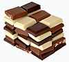

chocolate
phenomenon

Is made of Matter:
Would you like to link to an existing definition or create a new one? You may check whether a definition exists or add a defintion of this term to Wikipedia and then let us know! so we can add it to the ontology.
Occurs in: